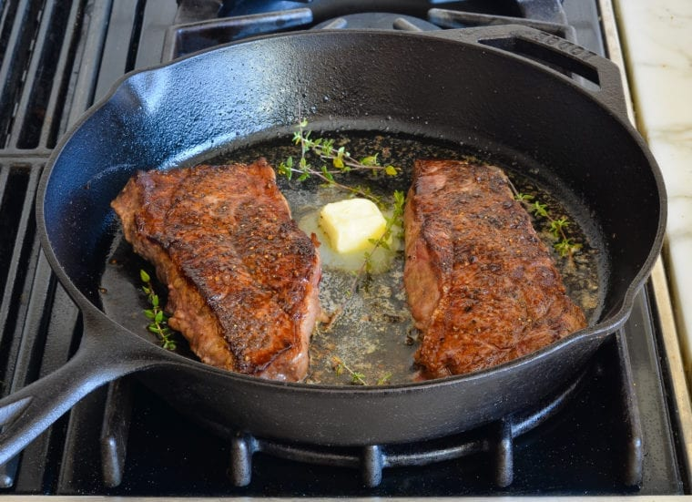

Home
Pan Fried Steak

Description
Pan searing at it's best and the easiest way to cook a steak.
Ingredients
-
2 (12 ounce) New York strip or ribeye steaks about 1 1/2 inches thick
- 1 heaping teaspoon of kosher salt
- 1/2 teaspoon of freshly ground black pepper
- 2 tablespoons of vegetable oil
- 1 tablespoon of unsalted butter
- A few sprigs of fresh thyme leaves
Steps
- To begin with, pat steaks with paper towels.
- Season the steaks all over with salt and pepper.
-
Turn on the exhaust fan and heat a cast iron or stainless steel pan
over medium-high heat until it is very hot.
-
Add oil to the pan and heat until it begins to shimmer and move fluidly
around the pan.
-
Carefully set the steaks in the pan, releasing them away from you so
the oil doesn't splatter in your direction. The oil should sizzle.
-
Leave the steaks alone. The steaks need a few minutes undisturbed to
develope a golden crust. Flip the steaks when they release easily and
the bottom is a deep brown color, about 3 minutes. Continue to cook
the steaks for another 3 to 4 minutes on the second side for rare
to medium-rare. (For medium, cook 4 to 5 minutes on second side; for
well-done, cook 5 to 6 minutes on second side).
-
During the last minute of cooking, add the butter and thyme sprigs to
the pan with the steaks.
-
If you serving the steaks unsliced, transfer them to plates and serve
hot. If you plan to slice the steaks, transfer them to a cutting board
and let rest, covered with aluminum foil, for 5 to 10 minutes; then
slice thinly against the grain.